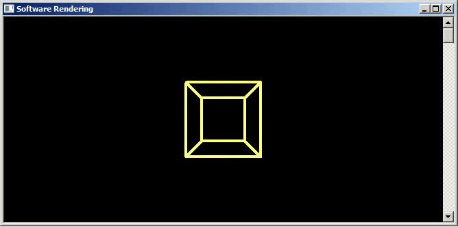

Вращаем проволочную модель куба вокруг оси Y
Загрузить архив с примерами ЗДЕСЬ.
Результат работа программы для данной главы показан на анимации ниже.
Проект с примером (вращение проволочной модели куба вокруг оси Y) написанный на С++, проект Console Win32 Application загрузить проект /src/01.002-rot_y/3d_cubeY_1.
Проект с примером (вращение проволочной модели пирамиды вокруг оси Y) написанный на С++, проект Console Win32 Application загрузить проект /src/01.002-rot_y/3d_PyramidY.
Проект в котором z делиться на (Rc.bottom / 2.0f) это упрощает преобразование в экранные координаты. Win32 Application загрузить проект /src/01.002-rot_y/3d_cubeY_2.
Еще один проект написанный на С++, проект Console Win32 Application загрузить проект /src/01.002-rot_y/3d_cubeY_3. В этом примере другой расчет вершин в первом цикле - без учета аспекта, и деление на Z при вычислении экранных координат.
Еще один проект на С++, /src/01.002-rot_y/3d_cubeY_4 - в этом примере вращение вокруг оси Y осуществляется не с помощью матрицы, а с помощью кватерниона. Кватернионы подробно будут описаны в следущих главах.
В математике значение Pi = 3.1415926535897932384626433. Это значение Pi 25 знаков после запятой взято из учебника математики. Почему в математике считается что Pi это 180 градусов? Рассмотрим формулу длинны окружности. Вся длинна окружности как очевидно это 360 градусов. Формула длинны окружности 2 * Pi * R - где R это радиус окружности. Если радиус окружности равен единице, то есть у нас единичная окружность (окружность с единичным радисуом R = 1), то формула длинны окружности записывается так: 2 * Pi * 1, что равнозначно длинна окружности равна 2 * Pi. А значит 2 * Pi это 360 градусов для единичной окружности. Тогда Pi = 360 / 2 будет 180 градусов. Вот почему Pi принято считать в математике это 180 градусов. Что такое само число Pi? Это пропорция- сколько нужно взять диаметра окружности, что бы получить длинну окружности. Формула длинны окружности Pi * D где D - это диаметр окружности. 2 * Pi если округлить приблизительно 6.28, тогда если у окружности диаметр D и мы возьмем 6.28 частей диаметра то получим длинну окружности, единичной окружности. Формула диаметра окружности D = 2 * R, т.е. диаметр окружности это ее два радиуса. Таким образом 2 * Pi или приблизительное значение 6.28 это длинна единичной окружности.
Поворот против часовой стрелки считаеться в математике поворотом в положительную сторону. У кого очень быстрый компьютер картинка может мелькать на экране (слишком быстрое вращение куба), что бы замедлить работу программы (и замедлить вращение куба) поставте в конце функции Draw_Cube() в программе большее значение для функции Sleep() не 25 а большее методом подбора, например 100 или 120 милисекунд. Вызов функции Sleep(25); расположен в конце функции Draw_Cube().
Что значит повернуть куб по оси Y? Надо все вершины куба умножить на матрицу поворота по оси Y. Что бы одновременно повернуть куб по оси X,Y,Z нужно сначала умножить все вершины куба на матрицу поворота по оси X, потом все вершины куба умножить на матрицу поворота по оси Y, потом все вершины куба умножить на матрицу поворота по оси Z. Или другой способ- сначала переменожить матрицы вращения по осям X,Y,Z и получить результирующую матрицу, а потом все вершины куба умножить на эту результирующую матрицу.
Можно совмещать повороты- например одновременно вращать по X, Y, Z или только по двум осям, или по одной как в примере ниже. Например нам нужно вращать куб вокруг оси X и Y. Для этого нужно матрицу поворота вокруг оси X умножить на матрицу поворота вокруг оси Y - мы получим результирующую матрицу, потом каждую вершину модели умножить на эту результирующую матрицу. Если нам нужен поворот вокруг осей X,Y,Z, то для этого необходимо матрицу поворота по оси X умножить на матрицу поворота по оси Y и результат умножить на матрицу поворота по оси Z - мы получим результирующую матрицу умножения трех матриц, и вершины модели нужно умножить на эту результирующую матрицу. Самое главное для корректного поворота нужно знать- что модель куба находиться в локальных координатах, вершины куба рассчитаны в локальных координатах так что центр этих вершин куба- в центре координатных осей. И нужно помнить правило для поворота- сначала повернуть куб, а потом переместить. Если мы переместим куб в мировом пространстве сцены на плюс Z + 15 а затем повернем- он будет вращаться вокруг центра сцены, а нам надо что бы куб вращался вокруг своей оси по X, Y, Z – поэтому что бы повернуть куб вокруг своей оси, а не вокруг центра всей сцены на экране- нужно сначала поворачивать в локальных координатах (центр модели куба находится в центре сцены), а потом перемещать на плюс 15 единиц в глубину по Z. Можно попробывать самому для примера- применить к вершинам куба поворот вокруг оси X, затем к результату применить вопорот вокруг Y, затем к результату применить поворот вокруг Z. Затем отодвинуть на плюс 15 в глубину. Но не сначала отодвинуть в глубину на плюс 15, а потом вращать. В этом случае вращение будет не вокруг своей оси, а вокруг центра сцены.
Вот как выглядят матрицы вращения по осям X,Y,Z, где angle это угол поворота в радианах.
typedef float matrix4x4[4][4];
matrix4x4 mxRotateX = {
1.0, 0.0, 0.0, 0.0,
0.0, cos(angle), sin(angle), 0.0,
0.0, -sin(angle), cos(angle), 0.0,
0.0, 0.0, 0.0, 1.0 };
matrix4x4 mxRotateY = {
cosf(angle), 0.0, -sinf(angle), 0.0,
0.0, 1.0, 0.0, 0.0,
sinf(angle), 0.0, cosf(angle), 0.0,
0.0, 0.0, 0.0, 1.0 };
matrix4x4 mxRotateZ = {
cosf(angle), sinf(angle), 0.0, 0.0,
-sinf(angle), cosf(angle), 0.0, 0.0,
0.0, 0.0, 1.0, 0.0,
0.0, 0.0, 0.0, 1.0 };
Вот как выглядит умножение вектора на матрицу в виде псевдокода, включает скалярное умножение векторов, так как есть исходный вектор, который скалярно умножается на колонки матрицы, а колонки матрицы это тоже вектор x,y,z,w. У нашего исходного вектора далее в коде С++ принимается w = 1.
Res_Vec.x = vec * mat.колонка1 Res_Vec.y = vec * mat.колонка2 Res_Vec.z = vec * mat.колонка3 Res_Vec.w = vec * mat.колонка4
Вот как выглядит функция умножения вектора (одной вершины куба) на матрицу вращения на С++ - у нашего вектора четвертый параметр w = 1:
struct vertex {
float x,y,z;
};
typedef float matrix4x4[4][4];
//функция умножения вектора на матрицу
vertex Vec3_Mat4x4_Mul(vertex v, matrix4x4 m)
{
vertex t;
t.x = v.x * m[0][0] +
v.y * m[1][0] +
v.z * m[2][0] +
m[3][0];
t.y = v.x * m[0][1] +
v.y * m[1][1] +
v.z * m[2][1] +
m[3][1];
t.z = v.x * m[0][2] +
v.y * m[1][2] +
v.z * m[2][2] +
m[3][2];
return t;
}
Вот как выглядит вызов функции умножения вектора на матрицу:
vertex v = Vec3_Mat4x4_Mul(vert_buff[i], mxRotateY);
Следует отметить что в софтварном рендеринге и DirectX матрицы хранятся row major (старшинство рядов), поэтому сначала модель нужно повернуть потом переместить. В OpenGL наоборот, матрицы хранятся col major (старшинство колонок) поэтому модель сначала нужно переместить потом повернуть. Так же различие в том, что DirectX хранит вершины модели по часовой стрелке, а OpenGL хранит вершины модели против часовой стрелки. Мы будем использовать в наших примерах обход вершин по часвой стрелке.
Теперь в программу, котору мы составляли ранее, можно добавить вращение куба. Добавим перед функцией Draw_Cube() объявление типа данных matrix4x4 который будет хранить матрицу поворота, так же добавим функцию умножения вектора (т.е.нашей одной вершины) на матрицу (в нашем случае матрица поворота по оси Y). И изменим функцию Draw_Cube(), в первом цикле добавим умножение одной вершины на матрицу поворота по оси Y. Перед рисованием линий, т.е. перед вторым циклом, необходимо добавить очистку экрана при помощи функции Rectangle() (см. полный код программы).
struct vertex {
float x,y,z;
};
typedef float matrix4x4[4][4];
//функция умножения вектора на матрицу
vertex Vec3_Mat4x4_Mul(vertex v, matrix4x4 m)
{
vertex t;
t.x = v.x * m[0][0] +
v.y * m[1][0] +
v.z * m[2][0] +
m[3][0];
t.y = v.x * m[0][1] +
v.y * m[1][1] +
v.z * m[2][1] +
m[3][1];
t.z = v.x * m[0][2] +
v.y * m[1][2] +
v.z * m[2][2] +
m[3][2];
return t;
}
void Draw_Cube()
{
//получаем размеры окна
RECT rc;
GetClientRect(hWnd, &rc);
//переменная angle хранит угол поворота в радианах
static float angle = 0.0;
//формируем матрицу поворота по оси Y - массив С++
matrix4x4 mxRotateY = {
cosf(angle), 0.0, -sinf(angle), 0.0,
0.0, 1.0, 0.0, 0.0,
sinf(angle), 0.0, cosf(angle), 0.0,
0.0, 0.0, 0.0, 1.0 };
//добавляем до угла поворота новое значение для следующего цикла
//если угол поворота больше 360 градусов делаем angle = 0.0f
angle = angle + (3.1415926f / 100.0f);
if(angle > (3.1415926f * 2.0f) )
angle = 0.0f;
for ( int i = 0; i < 8; i++ )
{
//умножаем вектор на матрицу
vertex v = Vec3_Mat4x4_Mul(vert_buff[i], mxRotateY);
Вот как выглядит вращение вокруг оси X и Y. Загрузить пример /src/01.002-rot_y/3d_cubeXY. Сначала вершина умножается на матрицу вращения по оси X, потом вершина умножается на матрицу вращения по оси Y. Если вы поменяете порядок умножения вершин на матрицы- вы получите другой результат на экране. Результат быдет другим если сначала вершины умножить на матрицу вращения по оси Y а потом вершины умножить на матрицу вращеня по оси X.
void Draw_Cube()
{
RECT rc;
GetClientRect(hWnd, &rc);
static float angle = 0.0;
matrix4x4 mxRotateX = {
1.0, 0.0, 0.0, 0.0,
0.0, cosf(angle), sinf(angle), 0.0,
0.0, -sinf(angle), cosf(angle), 0.0,
0.0, 0.0, 0.0, 1.0 };
matrix4x4 mxRotateY = {
cosf(angle), 0.0, -sinf(angle), 0.0,
0.0, 1.0, 0.0, 0.0,
sinf(angle), 0.0, cosf(angle), 0.0,
0.0, 0.0, 0.0, 1.0 };
angle = angle + (3.1415926f / 100.0f);
if(angle > (3.1415926f * 2.0f) )
angle = 0.0f;
for ( int i = 0; i < 8; i++ )
{
vertex v = Vec3_Mat4x4_Mul(vert_buff[i], mxRotateX); v = Vec3_Mat4x4_Mul(v, mxRotateY);
В следующем примере было произведено умножение двух матриц- матрицы вращения по оси X и матрицы вращения по оси Y, а затем результирующая матрица умножалась на вершины модели куба. Загрузить пример /src/01.002-rot_y3d_cubeXY_mat_mul_1.
Вот как выглядит код умножения двух матриц на С++, ряды первой матрицы нужно скалярно умножить на колонки второй матрицы. То есть четыре строки первой матрицы - это четыре вектора, и четыре столбца второй матрицы - это четыре вектора. Нужно скалярно умножить первую строку первой матрицы на все четыре стоблца второй матрицы, получим в результате строку результирующей матрицы. И так все строки первой матрицы умножаются скалярно на колонки второй матрицы, в результате строятся строки третьей матрицы для результата.
Псевдокод умножения двух матриц выглядит так (включает скалярное умножение векторов):
Res_Mat.строка1.x = mat1.строка1 * mat2.колонка1 Res_Mat.строка1.y = mat1.строка1 * mat2.колонка2 Res_Mat.строка1.z = mat1.строка1 * mat2.колонка3 Res_Mat.строка1.w = mat1.строка1 * mat2.колонка4 Res_Mat.строка2.x = mat1.строка2 * mat2.колонка1 Res_Mat.строка2.y = mat1.строка2 * mat2.колонка2 Res_Mat.строка2.z = mat1.строка2 * mat2.колонка3 Res_Mat.строка2.w = mat1.строка2 * mat2.колонка4 Res_Mat.строка3.x = mat1.строка3 * mat2.колонка1 Res_Mat.строка3.y = mat1.строка3 * mat2.колонка2 Res_Mat.строка3.z = mat1.строка3 * mat2.колонка3 Res_Mat.строка3.w = mat1.строка3 * mat2.колонка4 Res_Mat.строка4.x = mat1.строка4 * mat2.колонка1 Res_Mat.строка4.y = mat1.строка4 * mat2.колонка2 Res_Mat.строка4.z = mat1.строка4 * mat2.колонка3 Res_Mat.строка4.w = mat1.строка4 * mat2.колонка4
Код на С++ умножение двух матриц выглядит так:
struct matrix4x4
{
float m[4][4];
};
matrix4x4 Mat4x4_Mat4x4_Mul(matrix4x4 mat1, matrix4x4 mat2)
{
matrix4x4 mat;
//row1 * col1
mat.m[0][0] = mat1.m[0][0]*mat2.m[0][0] + mat1.m[0][1]*mat2.m[1][0] + mat1.m[0][2]*mat2.m[2][0] + mat1.m[0][3]*mat2.m[3][0];
//row1 * col2
mat.m[0][1] = mat1.m[0][0]*mat2.m[0][1] + mat1.m[0][1]*mat2.m[1][1] + mat1.m[0][2]*mat2.m[2][1] + mat1.m[0][3]*mat2.m[3][1];
//row1 * col3
mat.m[0][2] = mat1.m[0][0]*mat2.m[0][2] + mat1.m[0][1]*mat2.m[1][2] + mat1.m[0][2]*mat2.m[2][2] + mat1.m[0][3]*mat2.m[3][2];
//row1 * col4
mat.m[0][3] = mat1.m[0][0]*mat2.m[0][3] + mat1.m[0][1]*mat2.m[1][3] + mat1.m[0][2]*mat2.m[2][3] + mat1.m[0][3]*mat2.m[3][3];
mat.m[1][0] = mat1.m[1][0]*mat2.m[0][0] + mat1.m[1][1]*mat2.m[1][0] + mat1.m[1][2]*mat2.m[2][0] + mat1.m[1][3]*mat2.m[3][0];
//row2 * col2
mat.m[1][1] = mat1.m[1][0]*mat2.m[0][1] + mat1.m[1][1]*mat2.m[1][1] + mat1.m[1][2]*mat2.m[2][1] + mat1.m[1][3]*mat2.m[3][1];
//row2 * col3
mat.m[1][2] = mat1.m[1][0]*mat2.m[0][2] + mat1.m[1][1]*mat2.m[1][2] + mat1.m[1][2]*mat2.m[2][2] + mat1.m[1][3]*mat2.m[3][2];
//row2 * col4
mat.m[1][3] = mat1.m[1][0]*mat2.m[0][3] + mat1.m[1][1]*mat2.m[1][3] + mat1.m[1][2]*mat2.m[2][3] + mat1.m[1][3]*mat2.m[3][3];
//row3 * col1
mat.m[2][0] = mat1.m[2][0]*mat2.m[0][0] + mat1.m[2][1]*mat2.m[1][0] + mat1.m[2][2]*mat2.m[2][0] + mat1.m[2][3]*mat2.m[3][0];
//row3 * col2
mat.m[2][1] = mat1.m[2][0]*mat2.m[0][1] + mat1.m[2][1]*mat2.m[1][1] + mat1.m[2][2]*mat2.m[2][1] + mat1.m[2][3]*mat2.m[3][1];
//row3 * col3
mat.m[2][2] = mat1.m[2][0]*mat2.m[0][2] + mat1.m[2][1]*mat2.m[1][2] + mat1.m[2][2]*mat2.m[2][2] + mat1.m[2][3]*mat2.m[3][2];
//row3 * col4
mat.m[2][3] = mat1.m[2][0]*mat2.m[0][3] + mat1.m[2][1]*mat2.m[1][3] + mat1.m[2][2]*mat2.m[2][3] + mat1.m[2][3]*mat2.m[3][3];
//row4 * col1
mat.m[3][0] = mat1.m[3][0]*mat2.m[0][0] + mat1.m[3][1]*mat2.m[1][0] + mat1.m[3][2]*mat2.m[2][0] + mat1.m[3][3]*mat2.m[3][0];
//row4 * col2
mat.m[3][1] = mat1.m[3][0]*mat2.m[0][1] + mat1.m[3][1]*mat2.m[1][1] + mat1.m[3][2]*mat2.m[2][1] + mat1.m[3][3]*mat2.m[3][1];
//row4 * col3
mat.m[3][2] = mat1.m[3][0]*mat2.m[0][2] + mat1.m[3][1]*mat2.m[1][2] + mat1.m[3][2]*mat2.m[2][2] + mat1.m[3][3]*mat2.m[3][2];
//row4 * col4
mat.m[3][3] = mat1.m[3][0]*mat2.m[0][3] + mat1.m[3][1]*mat2.m[1][3] + mat1.m[3][2]*mat2.m[2][3] + mat1.m[3][3]*mat2.m[3][3];
return mat;
}
Вызов функции умножения двух матриц выглядит так:
matrix4x4 mxRotateX = {
1.0, 0.0, 0.0, 0.0,
0.0, cosf(angle), sinf(angle), 0.0,
0.0, -sinf(angle), cosf(angle), 0.0,
0.0, 0.0, 0.0, 1.0 };
matrix4x4 mxRotateY = {
cosf(angle), 0.0, -sinf(angle), 0.0,
0.0, 1.0, 0.0, 0.0,
sinf(angle), 0.0, cosf(angle), 0.0,
0.0, 0.0, 0.0, 1.0 };
matrix4x4 m = Mat4x4_Mat4x4_Mul(mxRotateX, mxRotateY);
vertex v = Vec3_Mat4x4_Mul(vert_buff[i], m);
Более элегантное решение для умножения вектора на матрицу 4х4 и функции умножения матрицы 4х4 на матрицу 4х4. Загрузить код примера /src/01.002-rot_y/3d_cubeXY_mat_mul_2.
struct vertex {
union
{
float m[3];
struct {
float x,y,z;
};
};
};
struct matrix4x4
{
float m[4][4];
};
vertex Vec3_Mat4x4_Mul(vertex vec1, matrix4x4 mat1)
{
vertex temp;
for ( int j = 0; j < 3; j++)
{
float sum = 0.0f;
int i;
for ( i = 0; i < 3; i++)
{
sum += vec1.m[i] * mat1.m[i][j];
}
sum += mat1.m[i][j];
temp.m[j] = sum;
}
return temp;
}
matrix4x4 Mat4x4_Mat4x4_Mul(matrix4x4 mat1, matrix4x4 mat2)
{
matrix4x4 mat;
for (int row=0; row<4; row++)
{
for (int col=0; col<4; col++)
{
float sum = 0.0;
for (int index=0; index<4; index++)
{
sum+=(mat1.m[row][index]*mat2.m[index][col]);
}
mat.m[row][col] = sum;
}
}
return mat;
}
Пример /src/01.002-rot_y/3d_cubeY_5 показывает как можно изменять угол обзора на сцене. Чем меньше угол обзора тем больше куб выглядит на экране. В приложении угол обзора равен PI/2.0f это 90 градусов попробуйте изменить на PI/3.0f это 60 градусов - куб будет выглядеть больше. Если нужно подрегулируйте дистанцию до куба Vec.z = Vec.z + 20.0f; или больше. В приложении используется значение 15.0f.
Пример /src/01.002-rot_y/3d_cubeY_6 показывает еще один способ проецирования вершин куба на 2D плоскость экрана (используется функция Project).